見えないあなた（Out of Sight You） / 2007
 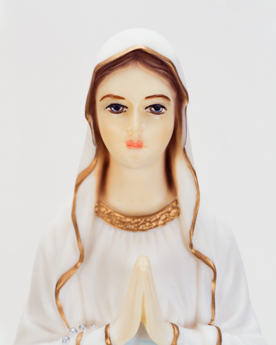
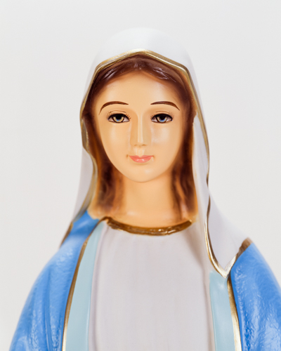
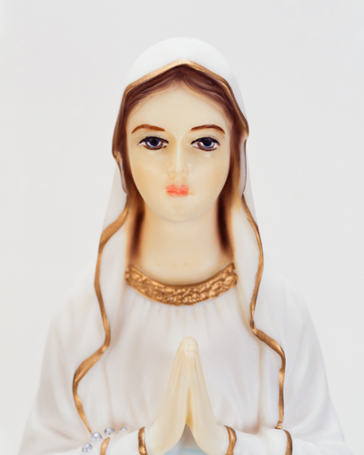
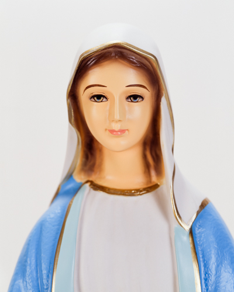


 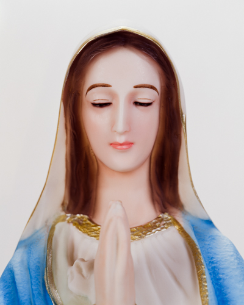
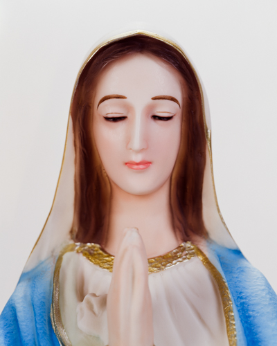
 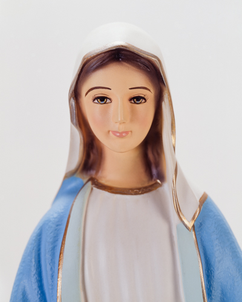
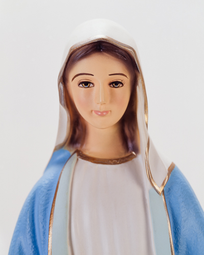

 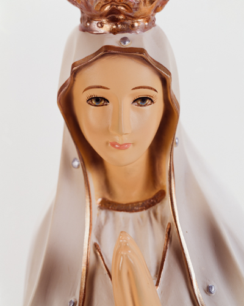
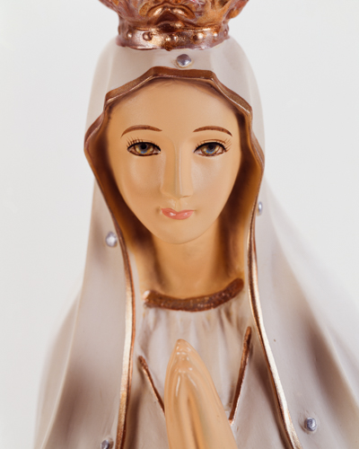
 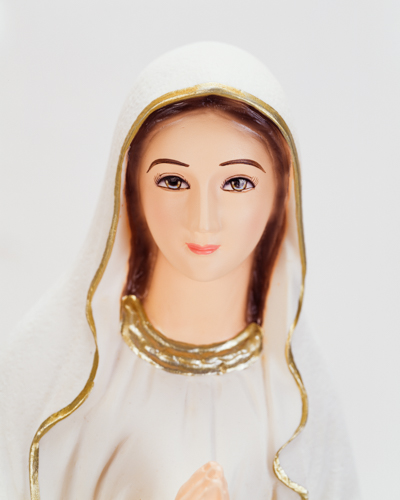
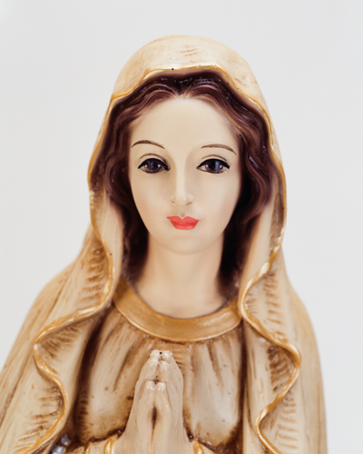
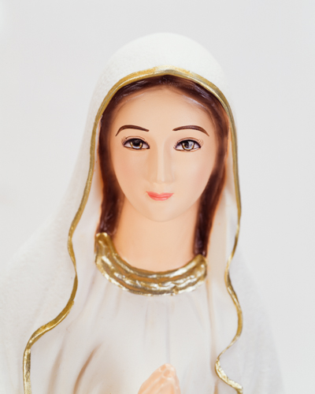
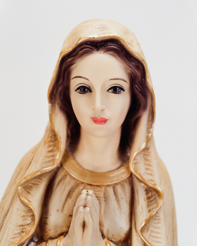

 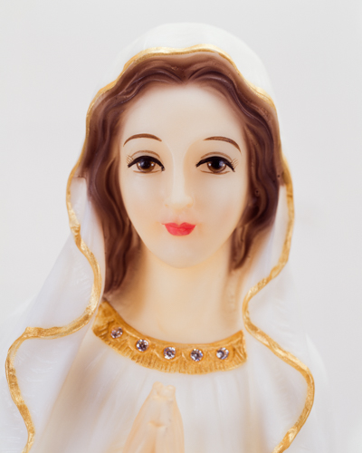
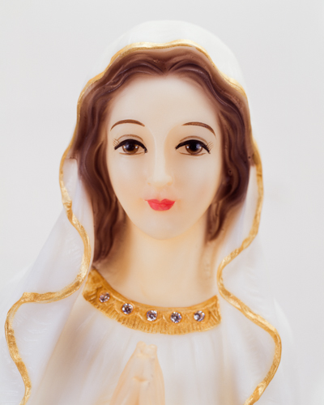


聖母像の視線は私たちと交わらない。どこかへ首を傾げたり、虚空へ向けられた眼差しは、観念的な聖母を想起させる。傾いだ首をまっすぐにし、それぞれの顔と目を見つめ直す。
他者を理解できるのは、生を維持するなかで共通のプロセスを経ており、欲求と欲望の変化がある種の類型を成すからだ。批判に先立って、受容的で、主体的で、水平で、世俗的であること。
しかし、臍の緒を否定して得られた「聖性」の権威が倫理・道徳の基準に影響するとき、善悪の判断はヒエラルキーと盲信へと傾く。差別と選別によって築かれ、それは実在に根ざさない。
生命現象は明確な基盤である。死は不可欠の条件であり、循環の輪をつくる。同時に、個別的であり普遍的でもある存在を可能にする。これが私の「社会的存在」としての本質的理解であり、ひいては関係力学の構造を受け止める態度である。
未婚の母（非婚の母）に、二つの生命の関係を見る。一つは生命そのものとして存在し、純粋に生きようとする本能のみをもつ。もう一つは、自らの欲求（あるいは欲望）を社会的要請と同一視する存在である。生の意志だけは同じだ。結論は、一方の犠牲である。そこに生命現象があり、神はその姿を現す。要は選択の問題であり、いかなる決断であっても、善く、聖なるものたり得る。
- 2009, 『見えないあなたへ（Out of Sight You）』, ギャラリー175, ソウル — 個展